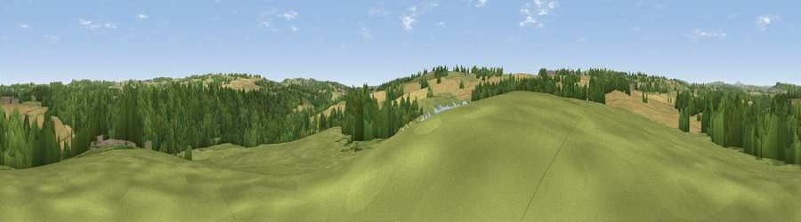

Viewpoint near Chelmarsh Common
#33423 in England · top 77% of its area beats it · near Chelmarsh CommonThe view, rendered

A 360° render of this exact spot computed from the terrain model, tree cover and land cover — summer colours, afternoon light, calibrated against photographs of famous viewpoints. Real trees, hedges and buildings will differ in detail.
The panorama
Grey silhouette: terrain skyline in each direction (720 bearings, Earth curvature and refraction included). Dashed green: skyline with trees (+15 m) and buildings (+8 m) as obstacles. Blue strip: how far the ground is visible on each bearing.
Where the view opens
Wedge length = distance to the farthest visible ground on that bearing (vegetation-aware). Rings at 10, 25 and 50 km.
What fills the view
38% woodland · 33% cropland · 24% grassland · 4% water ·
Angular shares of the visible panorama (visual magnitude), not map area. Landscape diversity 0.54 (0–1 Shannon).
Key numbers
More beautiful places nearby
The staircase of upgrades: each row has a higher view potential than everything closer. Driving times are estimates from straight-line distance, calibrated against real road routing — check an actual route before setting out.
| Place | Direction | Drive | Score |
|---|---|---|---|
| Viewpoint near Hampton Loade | SSW · 2 km | ~5 min | 59.6 |
| Viewpoint near Claverley | NE · 5 km | ~11 min | 60.0 |
| Viewpoint near Quatt | E · 5 km | ~11 min | 61.9 |
| Viewpoint near Quatt | E · 5 km | ~11 min | 62.1 |
| Viewpoint near Enville | ESE · 7 km | ~15 min | 66.9 |
| Knowle Hill | SW · 8 km | ~15 min | 75.5 |
| Viewpoint near Burwarton | WSW · 14 km | ~26 min | 83.4 |
| Titterstone Clee | SW · 18 km | ~31 min | 83.8 |
52.48771, -2.38690 · source: screening · position refined by local search. Computed location — check access rights before visiting.